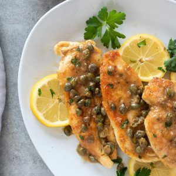

Chicken Piccata

Description
This chicken piccata recipe is quick and easy. Pounded chicken
breasts are topped with a simple pan sauce made with capers, butter, white wine,
and lemon juice.
Ingredients for Chicken Piccata
- 4 Skinless, Boneless, Chicken Breast Halves
- Cayenne Pepper to Taste
- Salt and Ground Black Pepper to Taste
- All-Purpose Flour for Dredging
- 2 tablespoons Olive Oil
- 1 tablespoon Capers, Drained
- 1/2 cup White Wine
- 1/4 cup Fresh Lemon Juice
- 1/4 cup Water
- 3 tablespoons Cold Unsalted Butter Cut in 1/4 inch Slices
- 2 tablespoons Chopped Fresh Italian Parsley
Steps
- Place chicken breasts between 2 sheets of heavy plastic on a solid, level surface. Firmly pound chicken breasts with the smooth side of a meat mallet to a 1/2-inch thickness.
- Season both sides of chicken breasts with cayenne, salt, and black pepper; dredge lightly in flour and shake off any excess.
- Heat olive oil in a skillet over medium-high heat. Place chicken in the pan, reduce heat to medium, and cook until browned and cooked through, about 5 minutes per side; remove to a plate.
- Cook capers in reserved oil, smashing them lightly to release brine, until warmed through, about 30 seconds.
- Pour white wine into the skillet and bring to a boil while scraping the browned bits of food off the bottom of the pan with a wooden spoon. Cook until reduced by half, about 2 minutes.
- Stir lemon juice, water, and butter into the reduced wine mixture; cook and stir continuously to form a thick sauce, about 2 minutes. Reduce heat to low and stir parsley through the sauce.
- Return chicken breasts to the pan and cook until heated through, 1 to 2 minutes. Serve with sauce spooned over the top.